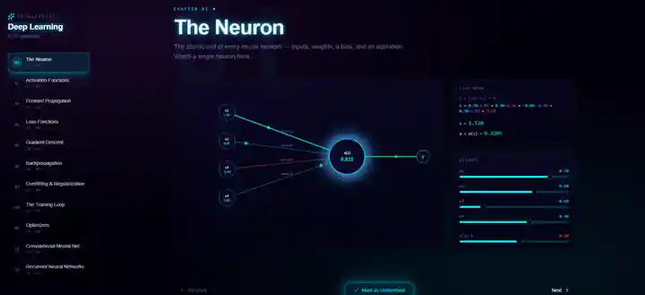

01 / overview
Teach intuition through interaction, not another wall of theory.
Each chapter is a self-contained interactive visualization. The application uses a shared shell and chapter registry so the learning experience feels continuous even though every concept has its own simulation and controls.
Covers foundational neural-network concepts through modern deep-learning architecture.
Vision, NLP, and Core Theory provide guided routes through the material.
All math and visualization logic runs client-side with progress saved locally.
02 / architecture
A reusable shell around independent learning simulations.
Routing and chapter metadata are centralized, while each concept remains an isolated visualization component that can own its own controls, animation, and math.
The registry keeps navigation and curriculum structure consistent while the chapter components remain specialized enough to represent very different concepts.
03 / flow
Learning interaction loop
The interface is designed around manipulation first, then interpretation.
Navigate directly or follow a Vision, NLP, or Core Theory learning path.
Drag weights, change parameters, toggle modes, or trigger an animation.
Graphs, nodes, losses, gradients, or activations update immediately.
The chapter connects the visible behavior back to the underlying concept.
Completion state is saved locally for the next session.
04 / real product
Actual interactive learning interface.
This is a real screen from NeuralVerse. Chapter 01 combines an interactive neuron visualization, live math, adjustable weights, chapter navigation, and progress controls in one learning surface.

The interface connects visual intuition with the underlying weighted-sum and activation calculation.
05 / curriculum map
Twenty chapters form a progression rather than a random gallery.
The curriculum moves from core mechanics into network architectures and then into modern deep-learning systems.
Learn the mechanics
See specialized networks
Connect advanced ideas
06 / decisions
Key product and engineering decisions
- One component per concept - each visualization can use the interaction model that best fits the idea being taught.
- Shared shell and registry - navigation, completion state, and curriculum metadata stay consistent across all 20 chapters.
- Client-side computation - the educational experience stays fast, free to host, and independent of a backend.
- Motion as explanation - Framer Motion and chart transitions are used to reveal state changes, not only for decoration.
07 / stack